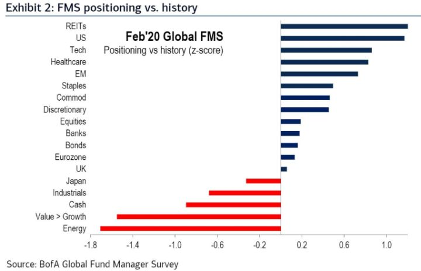

Viikon kuumat linkit
The test of a first-rate intelligence is the ability to hold two opposed ideas in mind at the same time and still retain the ability to function." - F. Scott Fitzgerald
Millenniaaleille tai nuoremmille, vasta sijoittamista ja kuukausisäästämistä aloitteleville, reipas kurssipudotus olisi taivaanlahja. Sitä se ei olisi jo eläkkeellä oleville ja vuosikymmenten aikana osakkeisiin säästäneille, joiden on tarkoitus nostaa säästöistään elämistä varten. Se, millaiseen järjestykseen tulevat vuosituotot järjestyvät ovat siis niin uhka kuin myös mahdollisuus. Tämän ymmärtäminen on tärkeää, sillä epäsuotuisaan aikaan tapahtunut markkinan korjaus voi vaikuttaa selvästi mahdollisuuteen nostaa säästöjään ulos. Seuraavassa hyvä kuvaus ”sekvenssiriskistä” ja eri varautumistaktiikoista, joista kukin voi miettiä omaan strategiaan ja persoonallisuuteen sopivan.
Kun short-VIX -etf “XIV” räjähti ja meni nollaan alkuvuodesta 2018, monet nostivat esille Artemis Capitalin työpaperin, jonka kannessa oli omaa häntäänsä syövä käärme, ja jossa käytännössä oli ennustettu tällainen volakupla. Käärmeen päänä on keskuspankkipolitiikka, QE ja korkopolitiikka. Ne ovat johtaneet alhaisiin korkoihin, joiden sivutuotteena on syntynyt useita käytännössä volaa myyviä strategioita, joita on momenmoisia, mutta joita yhdistää sama teema: tuoton metsästys (näistä yhdestä puhuttiin viime viikolla). Lopputuloksena vola on painunut alas, ja se on käärmeen häntä. Nyt Artemikselta on tullut uusi paperi, jonka kannessa on sama käärme, mutta nyt sitä kohtaan on hyökännyt haukka. Haukka kuvaa uuden, pysyvän muutoksen mukanaan tuomaa volaa. Viimeiset 40 vuotta ovat olleet kultaisia vuosikymmeniä. Korot ovat tulleet huipuistaan nollaan ja sekä osakkeet että bondit ovat nauttineet huimista tuotoista. Nyt korot ovat nollassa, rakenteellinen kasvu on hidastunut, demografia on huonontunut ja systeemi on pumpattu täyteen velkaa. Allegorian haukan vasen siipi kuvaa deflaatiota ja oikea siipi inflaatiota. Joko ajaudumme deflaation kierteeseen tai sitten inflatoimme itsemme ulos veloista. Molemmissa tapauksissa volaa olisi tiedossa. Silläkin uhalla, että alkaa pelottaa, on skenaarioiden mahdollisuus arvioitava. Volan nousun uhka on olemassa. Se on hyvä tiedossa, jotta siihen voi varautua. Jos ei jaksa lukea työpapereita, voi kuunnella kirjoittajan podcast-haastattelun, josta saa ihan hyvän käsityksen teesistä. (Artemis Capitalin tekemä video on visuaalisin kuvaus volatiliteetin ja markkinoiden dynamiikasta.)
Jos merkkejä markkinan ylikuumentumisesta haluaa etsiä, olisi tässä tarjolla yksi. Sijoittajat, etenkin retail-sijoittajat, ovat aktivoituneet. He ovat intoutuneet ostamaan calleja spekuloidakseen osakkeiden, kuten Tesla, Apple ja Amazonin nousulla. Retail-sijoittajat ovat keskustelupalstoilla keränneet voimansa ja joukolla lähteneet talkoihin. Optioiden volyymi on lähestynyt jo itse allaolevien osakkeiden volyymia - korkein määrä ainakin 14 vuoteen. Operaatio muistuttaa markkinamanipulaatiota, jota kutsutaan nimellä ”pump & dump”. Siinä pyritään “pumppaamaan” osake ylös, jotta voidaan sitten “dumpata” ostetut osakkeet/optiot korkeampaan hintaan. Ostamalla isoja määriä calleja, jotka itsessään ovat vivutettu veto, spekulantit pakottavat markkinatakaajat ostamaan osaketta (jälleen: short vol). Tällaista spekulointia ei olla nähty pitkään aikaan ja tuskin tällaista nähtäisiin ellei markkinoilla olisi yleisestikin varsin hurlumhei tunnelmat.
Seuraavassa tänään julkaistu katsaus markkinoiden pinnan alle. Tarjolla kattava annos graafeja, joten jos tekninen analyysi ei kiinnosta, älköön vaivautuko. Kerrottakoon kuitenkin, että momentum etenkin teknologiaosakkeissa ja etenkin suhteessa muuhun markkinaan on saavuttanut historialliset mittasuhteet. Sellainen on historian valossa johtanut rivakoihin vastaliikkeisiin. Katso myös viikon kuva, joka puhuu äärimmilleen viriteryistä positioinneista. Volaa voi olla odotettavissa lähiviikkoina.
Esports on kasvava ja mielenkiintoinen ala. Jos siihen haluaa sijoittaa, on monia suoria tai vähemmän suoria vaihtoehtoja. Roundhill Investments on tehnyt asian helpoksi ja luonut siihen ETF:n tikkerillä ”NERD”. Tee se itse -nikkarille heiltä on tarjolla myös hyvää lisätietoa: 1) kymmenen osaketta, joiden kautta sijoittaa esports-trendiin, 2) top mobiili- ja mobiiliesports-pelit, 3) 15 osaketta, joita kautta itse esports-joukkueisiin ja -alustoihin.
“Striimaussota” käy kuumimmillaan. Uusia tarjoajia tulee markkinoille, mutta alkaako kohta kuluttaja olemaan ähky eri palveluista? PWC:n kyselystä ilmenee, että 76% kuluttajista on tyytyväisiä nykyisiin videopalveluihinsa. 64% odottaa hintojen nousevan, mutta silti 50% vastanneista indikoivat haluavan panostaa vielä uuteen palveluun. Toisaalta Nielsenin tutkimuksen mukaan juuri hinta on 84% kuluttajista tärkein tekijä. Ilmeisesti kuluttajat ovat valmiita panostamaan haluamaansa sisältöön. Mielenkiintoinen essee käsittelee aihetta ja vertaa sitä maksukanavien syntyyn 1970-90-luvuilla. Aina vain uusia kanavia syntyi ja kaikille tuntui löytyvän tilaa. Jos hinta on kuluttajalle ongelma, löytyy ratkaisu mainospohjaisesta tilausmallista (AVOD – advertising-based video on demand). Tällä tavoin kuluttaja saa hinnan alas, mutta palveluntarjoaja saa jopa merkittävästi enemmän arvoa kuluttajasta kuin aikaisemmin. Ja mitä tulee palveluntarjoajien sisältöbudjetteihin, Amazon, Apple, Disney ja kumppanit eivät edes ajattele sitä varsinaisesti sisällön investointina, vaan investointina ekosysteemiinsä. Toisin kuin Netflixille, heille arvo ei välttämättä tule videon suoratoistosta, vaan siitä, että koko ekosysteemi on asiakkaalle parempi. Siksi Netflix voi olla pulassa.
Podcastit:
Verdad Advisersin Dan Rasmussenilla on tausta private equitystä. Hän oli aikaisemmin vakaasti sitä mieltä, että PE-rahastojen historiallisesti saavuttamat hyvät ylituotot olisi toistettavissa vielä jatkossa. Uskomus muuttui, kun hän tutki tarkemmin sitä, miten historialliset tuotot muodostuivat. Yksinkertaisesti valuaatiot olivat merkittävästi alhaisemmat. Samaa ei voi tänä päivänä sanoa. Enemmän ja enemmän pääomaa jahtaa pienempää määrää diilejä. Tuottoja pönkittääkseen PE-yhtiöt joutuvat vivuttaa ostot entistä korkeammin. Jos Verdad kuulostaa tutulta, voi se johtua siitä, että viime viikolla käytiin läpi heidän erinomaista raporttia siitä, mitä ostaa markkinaromahduksessa. Siitäkin ja tarkemmin PE-markkinan riskeistä podcast-haastattelussa.
Professori Clayton Christensen menehtyi noin kuukausi sitten. Hän tuli tunnetuksi luotuaan käsitteen “disruptiivinen innovaatio”, jota hän käsitteli kirjassaan “The Innovator’s Dilemma: When New Technologies Cause Great Firms to Fail.” Julkaisemisen jälkeen vuonna 1997, kirjasta ja sen teemoista on tullut kantavia voimia uusien innovatiivisten startupien ja tuotteiden rynnistykselle. Hänen entinen oppilaansa James Allworth sekä Stratecheryn Ben Thompson käyvät läpi Christensenin oppeja ja hänen maailmalle jättämää rikasta perintöä . Vaikka ne olisivatkin tuttuja entuudestaan, tarjoaa podcast paljon mieltä lämmittäviä tarinoita Christensenistä.
Viikon kuva:
BofA/ML:n kuukausittainen salkunhoitajien positiokysely on jälleen ulkona. Sitä on mielenkiintoista seurata, sillä siitä voi saada kuvaa markkinoiden odotuksista - sijoittajat kun äänestävät rahoillaan. Tuorein kysely vahvistaa käsitystä siitä, että ylipainot ovat varsin ääriasennossa kasvussa kuten teknologiassa, defensiivisissä ja low vol-osakkeissa kuten REITs, healthcare ja consumer staples, sekä USA:n osakkeissa ylipäätään. Hieman yllättäen (ainakin itselleni) EM ja hyödykkeet ovat hivuttautuneet selvään ylipainoon. Selvässä alipainossa ovat, eivät yllättäen, energia, teollisuus sekä arvo yleisesti (etenkin suhteessa kasvuun). Kyselyyn vastanneet sanoivat käteispainonsa olevan alimmillaan kuuteen vuoteen, joten se on pienoinen vaaran merkki yleisesti markkinoihin (käteistaso ei kuitenkaan ole niin alhaalla, että se kyseisen mittauksen pohjalta historiallisesti olisi vielä kontraamisen paikka).
